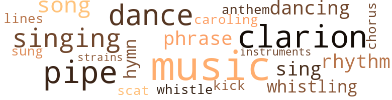
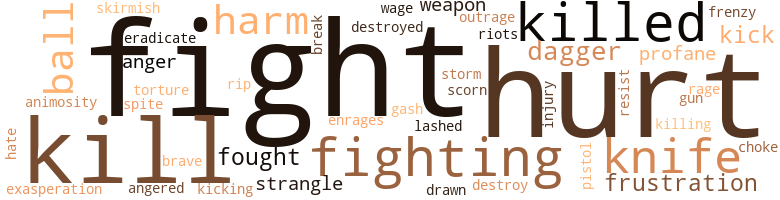
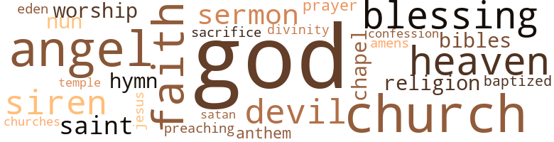

Clarion People (The), by Lee, Audrey (1968)
57 music-related terms matched in this text.
Most frequent terms in this topic: music (10); clarion (6); dance (4); singing (3); pipes (3)
caroling.n.01
Definition: singing joyful religious songs (especially at Christmas)
| word | sentence |
|---|---|
| caroling | The birds are singing above the trees , caroling in the wind , flirting with the wiles of the wind . |
chorus.n.01
Definition: any utterance produced simultaneously by a group
| word | sentence |
|---|---|
| chorus | The Army of Hope is singing a chorus of " Jesus Saves . '' |
clarion.n.01
Definition: a medieval brass instrument with a clear shrill tone
| word | sentence |
|---|---|
| clarion | Let the clarion retreat to my inner ear . |
| clarion | Drums can not reach me ; nor can the clarion voices . |
| clarion | The clarion tongues . |
| clarion | No clarion voices . |
| clarion | To the clarion tongues . |
| clarion | The clarion voices rest even as the pages of this book . |
dance.n.01
Definition: an artistic form of nonverbal communication
| word | sentence |
|---|---|
| dance | She is dancing a lewd dance . |
| dances | She dances for the men standing outside . |
dance.v.02
Definition: move in a pattern; usually to musical accompaniment; do or perform a dance
| word | sentence |
|---|---|
| dancing | He is dancing in a pile of leaves . |
| dancing | She is dancing a lewd dance . |
dance.v.03
Definition: skip, leap, or move up and down or sideways
| word | sentence |
|---|---|
| dance | Insects dance around the street lamp . |
| dance | When I hesitated in answering , he said he 'd show me places where I could dance and meet people . |
| dance | Would I like to learn to dance ? |
hymn.n.01
Definition: a song of praise (to God or to a saint or to a nation)
| word | sentence |
|---|---|
| anthem | And I stayed on my knees until morning , when the national anthem rising from the radio startled me from sleep . |
| hymn | He is whistling a hymn . |
| hymn | The operator is humming a hymn over and over . |
kick.v.04
Definition: kick a leg up
| word | sentence |
|---|---|
| kick | He wants to pick it up , but he fears I will kick him if he attempts to . |
music.n.01
Definition: an artistic form of auditory communication incorporating instrumental or vocal tones in a structured and continuous manner
| word | sentence |
|---|---|
| music | As if the total purpose of life were to make music . |
| Music | Music spills into the air like hysterics , like distress out of which knowing hands have written the score . |
| music | Like soft music that 's saying something subtle . |
| music | We get music in the evening - maybe you 'll want to hear something special . |
| music | The music is changing from concerted sounds of assorted instruments to organ music . |
| music | The music is changing from concerted sounds of assorted instruments to organ music . |
| music | ' Fhe men form a circle , the organ music emanating strange strains from a far and darkened corner of the room . |
| music | The moodiness of the organ music coming from the phonograph . |
| music | The masqueraders are falling back , through the smoke , with the music . |
| music | The music is still playing , over and over . |
| music | The music dominates the once-tense atmosphere , and the urgency of before is forgotten as the people gather in front of the truck to buy ice cream . |
musical_instrument.n.01
Definition: any of various devices or contrivances that can be used to produce musical tones or sounds
| word | sentence |
|---|---|
| instruments | The music is changing from concerted sounds of assorted instruments to organ music . |
phrase.n.02
Definition: a short musical passage
| word | sentence |
|---|---|
| phrase | A good sermon is a few half-truths and a twist of phrase with appropriate quotes from the Bible and the people go home feeling good and forgiven . |
| phrases | Keep your good phrases , your sympathy . |
pipe.n.04
Definition: a tubular wind instrument
| word | sentence |
|---|---|
| pipe | They share a pipe which Nat fills with tobacco and passes around . |
| pipe | They suck so hard on the pipe , that you wonder why they do not get a mouth full of tobacco . |
| pipes | Pie is carrying a bowl full of smoking pipes and saying : " Thou hast a few names even in Sardis which have not defiled their garments , and they shall walk with me in white for they are worthy . " |
| pipes | Nat is passing the pipes , taking them one at a time from the basket with ceremonial implications . |
| pipe | Each man in turn lights his pipe . |
| pipes | The sucking of pipes . |
rhythm.n.04
Definition: the arrangement of spoken words alternating stressed and unstressed elements
| word | sentence |
|---|---|
| rhythm | He turns to watch her , attracted by the rhythm of her walk . |
| rhythm | And I feel the rhythm of his movement . |
scat.n.01
Definition: singing jazz; the singer substitutes nonsense syllables for the words of the song and tries to sound like a musical instrument
| word | sentence |
|---|---|
| scat | He is moving from his scat , clutching the screaming baby , and standing between me and his mother . |
sing.v.02
Definition: produce tones with the voice
| word | sentence |
|---|---|
| sing | Even the birds were moved to sing . |
| sung | A thing to be sung . |
| sing | And upon lying down , I will let the crickets sing me to sleep . |
| singing | The Army of Hope is singing a chorus of " Jesus Saves . '' |
| singing | The birds are singing above the trees , caroling in the wind , flirting with the wiles of the wind . |
singing.n.01
Definition: the act of singing vocal music
| word | sentence |
|---|---|
| Singing | Singing . |
| singing | Just sitting there singing . |
song.n.01
Definition: a short musical composition with words
| word | sentence |
|---|---|
| songs | One of the more spirited songs . |
| song | Their song , or whatever their means of communication , enhances the surrounding peacefulness . |
| songs | The girls pick the songs and they play them over the speaker . |
tune.n.01
Definition: a succession of notes forming a distinctive sequence
| word | sentence |
|---|---|
| lines | I have lines under my eyes and a tremor in my hands . |
| strains | ' Fhe men form a circle , the organ music emanating strange strains from a far and darkened corner of the room . |
whistle.v.01
Definition: make whistling sounds
| word | sentence |
|---|---|
| whistling | He is whistling a hymn . |
| whistling | He stops whistling and is staring at me . |
| whistle | A whistle . |
123 violence-related terms matched in this text.
Most frequent terms in this topic: hurt (12); fight (11); fighting (9); killed (8); kill (8)
aggravation.n.01
Definition: an exasperated feeling of annoyance
| word | sentence |
|---|---|
| exasperation | I throw up the hand in my heart with exasperation , and walk back to work as fast as I can . |
anger.n.01
Definition: a strong emotion; a feeling that is oriented toward some real or supposed grievance
| word | sentence |
|---|---|
| anger | I feel anger , verging on the bitterest of gall because I am innocent . |
| anger | And yet , I am afraid of this anger . |
anger.v.02
Definition: become angry
| word | sentence |
|---|---|
| angered | " I mean what did you do that angered him enough to beat you ? " |
animosity.n.01
Definition: a feeling of ill will arousing active hostility
| word | sentence |
|---|---|
| animosity | Not too high and not too low , so as not to attract their ridicule or their animosity . |
brush.n.06
Definition: a minor short-term fight
| word | sentence |
|---|---|
| skirmish | Blacking out reality , now that I have had a skirmish with it . |
contemn.v.01
Definition: look down on with disdain
| word | sentence |
|---|---|
| scorn | To see him scorn life , to see him mock it . |
craze.n.02
Definition: state of violent mental agitation
| word | sentence |
|---|---|
| frenzy | It is not affected by the frenzy of the people of the city . |
cut.n.05
Definition: a wound made by cutting
| word | sentence |
|---|---|
| gash | That 's quite a gash you 've got . |
dagger.n.01
Definition: a short knife with a pointed blade used for piercing or stabbing
| word | sentence |
|---|---|
| dagger | His companion is dressed as a pirate and he is bearing a rubber dagger . |
| dagger | The dagger I see penetrates . |
| dagger | That is why I call it a dagger . |
| dagger | The dagger of the adult world . |
desecrate.v.01
Definition: violate the sacred character of a place or language
| word | sentence |
|---|---|
| profane | I 'll not profane it . |
| profane | I wo n't profane it . |
destroy.v.04
Definition: put (an animal) to death
| word | sentence |
|---|---|
| destroyed | When I got home , I destroyed every Bible in the house . |
| destroy | But when I think about it now , I did n't destroy any of them without first looking inside at the verses she underlined . |
draw.v.23
Definition: pull (a person) apart with four horses tied to his extremities, so as to execute him
| word | sentence |
|---|---|
| drawn | But I am drawn toward it . |
eliminate.v.03
Definition: kill in large numbers
| word | sentence |
|---|---|
| eradicate | A man chosen in the absence of a god to eradicate evil ? |
engage.v.07
Definition: carry on (wars, battles, or campaigns)
| word | sentence |
|---|---|
| wage | This is the time of night when the sex-starved men wage their hunt , even for women who have no animal in them . |
enrage.v.01
Definition: put into a rage; make violently angry
| word | sentence |
|---|---|
| Enrages | Enrages it ? |
fight.n.02
Definition: the act of fighting; any contest or struggle
| word | sentence |
|---|---|
| fighting | Often there is no principle behind their fighting . |
fight.n.05
Definition: a boxing or wrestling match
| word | sentence |
|---|---|
| Fight | Fight . |
| fight | She had won her desperate fight to keep the would-be rapist from her . |
| fight | " My husband and I had a fight . |
| fight | You have to save your strength for the big fight . |
| fight | I have a big fight , too . |
| Fight | Fight . |
| Fight | Fight . |
fight.v.02
Definition: fight against or resist strongly
| word | sentence |
|---|---|
| fighting | " But how can you feel godly and violent at the same time , even if you are fighting an enemy ? " |
| fight | " You have to fight sometimes , Princess . |
| fight | But I fight the tears and telephone Nat . |
| fight | " You want to fight me fair ? " |
| fight | You want to fight me fair ? " |
| fight | You just wanted to fight me a minute ago . " |
| fighting | He is fighting and struggling against the policemen 's urging that he should remain still . |
| fighting | He is fighting the police who are trying to keep him from climbing through the car window . |
| fighting | They are fighting . |
| fighting | You wonder whether they are fighting each other . |
| fought | And is followed by a peculiar stillness which I have known upon waking from a dream , verging upon a nightmare , when still half-asleep I fought to separate reality from the dream . |
| fighting | I am fighting the urge to smash the window . |
| fought | There was nothing to be done , the battle was fought . |
| fought | I felt I had deserted the men with whom I fought . |
| fighting | Perhaps he is fighting his desire for me . |
| fight | I am whirling toward them as if I expect to fight . |
| fight | They fight because they feel like fighting . |
| fighting | They fight because they feel like fighting . |
fracture.n.01
Definition: breaking of hard tissue such as bone
| word | sentence |
|---|---|
| break | " Bad break , huh , kid ? " |
frustration.n.03
Definition: a feeling of annoyance at being hindered or criticized
| word | sentence |
|---|---|
| frustration | The tense skin of a drum rising from the basement of one of the houses pounds monotonously , communicates frustration to my ears . |
| frustration | An overflow of frustration . |
| frustrations | More frustrations . |
fury.n.01
Definition: a feeling of intense anger
| word | sentence |
|---|---|
| rage | Between day and night and during their progress storms rage , but night follows day and day follows night without fail . |
gag.v.06
Definition: cause to retch or choke
| word | sentence |
|---|---|
| choke | " I 'm waiting for you to choke on that laugh . " |
gun.n.01
Definition: a weapon that discharges a missile at high velocity (especially from a metal tube or barrel)
| word | sentence |
|---|---|
| gun | Once a man ran after them with an empty machine gun . |
harm.v.01
Definition: cause or do harm to
| word | sentence |
|---|---|
| harm | No one is going to harm you . |
hate.v.01
Definition: dislike intensely; feel antipathy or aversion towards
| word | sentence |
|---|---|
| hate | The cynical smile , They are speaking of God as if they hate Him . |
hurt.v.04
Definition: cause damage or affect negatively
| word | sentence |
|---|---|
| hurt | Your mother is hurt . " |
| hurt | I 'm not going to hurt your sister or your mother . |
| hurt | Son , I 'm not going to hurt your mother . |
| hurt | Whitey seems to be hurt by Celeste 's words . |
indignation.n.01
Definition: a feeling of righteous anger
| word | sentence |
|---|---|
| outrage | And the more the tears came , the more I welcomed the pain , bore it with each thrust , with the outrage in my heart . |
injury.n.01
Definition: any physical damage to the body caused by violence or accident or fracture etc.
| word | sentence |
|---|---|
| harm | I 'm defending myself against harm or evil . |
| injury | He succumbs not so much from their force , but from the pain of injury . |
| harm | It ca n't do any harm . |
| harm | He did n't mean any harm . " |
| harm | " He did n't mean any harm . " |
| hurt | " Does that hurt , Miss Peoples ? " |
kick.v.04
Definition: kick a leg up
| word | sentence |
|---|---|
| kick | He wants to pick it up , but he fears I will kick him if he attempts to . |
kick_back.v.02
Definition: spring back, as from a forceful thrust
| word | sentence |
|---|---|
| kick | Nat turns to go out of the room and Pete aims a foot at his back , feigning to kick him . |
| kicks | I am reaching for them , but the nurse kicks them aside with her foot . |
| kicking | He is kicking Nat . |
kill.v.10
Definition: cause the death of, without intention
| word | sentence |
|---|---|
| kill | " I thought her dying would kill my Father . |
| killed | It killed my mother . " |
| killed | And they 're afraid that 's what killed him . " |
| kill | When I heard him boasting about having had you , I wanted to kill him . " |
| kill | " I 'm going to my room , Father " Pete wanted to kill his father the day the police found his sister lying unconscious in an alley . |
| kill | Or do I have to kill all of you to get it back ? " |
| kill | When I 'm thirty-five I 'm going to kill myself . " |
| killed | " She killed a man . " |
| killed | She killed somebody . " |
| Killed | " Killed somebody ? " |
| killed | It 's hard to believe she killed somebody . " |
| killed | I killed . " |
| killed | There was a time when I would have shrunk from a person who killed someone . |
| Kill | Kill the source of the venom . |
| Kill | Kill the source and avoid the epidemic . |
| kill | " Did you kill him , tomato ? " |
| kill | " But I was n't going to kill him . |
| kill | I was n't going to kill him . " |
| killing | We all feel like killing ourselves sometimes , but we do n't . |
| killed | A priest was killed and a woman seriously injured . |
knife.n.02
Definition: a weapon with a handle and blade with a sharp point
| word | sentence |
|---|---|
| knife | A kitchen knife got me into trouble . |
| knife | I have gripped the knife too tight ! |
| knife | " Lil , is that the best you can do with a knife ? |
| knife | The sheep is upon the knife . |
| knife | She raises the knife again . |
| knife | Celeste stabs him again and a white sheep is taking the knife from her hand . |
| knife | Why else did you bring the knife ? " |
malice.n.01
Definition: feeling a need to see others suffer
| word | sentence |
|---|---|
| spite | You love me in spite of yourselfl " '' Herbert , please put me down . " |
musket_ball.n.01
Definition: a solid projectile that is shot by a musket
| word | sentence |
|---|---|
| ball | A curly-headed little boy in short pants tosses a ball to his companion . |
| balls | They toss high and low balls and scuffle with each other for possession of the ball , which eludes them and rolls under a parked car . |
| ball | They toss high and low balls and scuffle with each other for possession of the ball , which eludes them and rolls under a parked car . |
| ball | The little boy slides under the car on his stomach and retrieves the ball . |
| ball | A white-haired woman with her hair pinned in a ball at the back of her head is offering crumbs to a squirrel . |
pain.v.02
Definition: cause emotional anguish or make miserable
| word | sentence |
|---|---|
| hurt | You might go to sleep again and somebody will hurt you . " |
| hurt | It wo n't hurt you . |
| hurt | She wo n't hurt it . |
| hurt | I think he was hurt . " |
| hurt | You really were hurt . |
| hurt | He 's trying to build you up so he can hurt you . |
| hurt | I would never hurt you . |
pistol.n.01
Definition: a firearm that is held and fired with one hand
| word | sentence |
|---|---|
| pistol | A guard with a pistol on his side pushes a button and the overhead door rises . |
resist.v.04
Definition: withstand the force of something
| word | sentence |
|---|---|
| resist | I blink my eyes to resist the tears that come anyway . |
riot.n.01
Definition: a public act of violence by an unruly mob
| word | sentence |
|---|---|
| Riots | Riots . |
rip.v.04
Definition: criticize or abuse strongly and violently
| word | sentence |
|---|---|
| rip | And I want to rip out my heart . |
storm.n.03
Definition: a direct and violent assault on a stronghold
| word | sentence |
|---|---|
| storm | Like the tension between self and circumstance , like a gathering storm with properties of madness . |
strangle.v.01
Definition: kill by squeezing the throat of so as to cut off the air
| word | sentence |
|---|---|
| strangle | Merely rubbing my neck , but I find myself waiting for his hand to tighten , to strangle me . |
| strangle | I put my arms around pretty young ladies and I strangle them . |
torment.v.01
Definition: torment emotionally or mentally
| word | sentence |
|---|---|
| Torture | Torture me . |
weapon.n.01
Definition: any instrument or instrumentality used in fighting or hunting
| word | sentence |
|---|---|
| weapon | You can carry a deadly weapon and nobody would take you seriously . |
| weapon | An optimistic weapon . |
weather.v.01
Definition: face and withstand with courage
| word | sentence |
|---|---|
| brave | What are you trying to prove - how brave you are ? |
whip.v.04
Definition: strike as if by whipping
| word | sentence |
|---|---|
| lashed | Once , before the time about which I am writing , a raging hurricane lashed at a telegraph pole near my window . |
187 religion-related terms matched in this text.
Most frequent terms in this topic: God (87); church (13); angel (11); faith (8); heaven (7)
amen.n.01
Definition: a primeval Egyptian personification of air and breath; worshipped especially at Thebes
| word | sentence |
|---|---|
| amens | They say a few amens , and they leave the church with the blessing of the minister . |
baptize.v.01
Definition: administer baptism to
| word | sentence |
|---|---|
| baptized | Like baptized . |
bible.n.02
Definition: a book regarded as authoritative in its field
| word | sentence |
|---|---|
| Bibles | Then I open the door , slowly at first , until I see their Bibles . |
| Bibles | The older woman clears her throat and the two women open their Bibles to a place already marked . |
blessing.n.05
Definition: the act of praying for divine protection
| word | sentence |
|---|---|
| blessing | He teases me about my asking blessing at the table . |
| blessing | He eats while I am asking the blessing . |
| blessing | I do not ask the blessing aloud when I sit at table with Nat any more . |
| blessing | But whether he likes it or not , I ask blessing for his food , too . |
| Blessing | Blessing . |
| blessing | They say a few amens , and they leave the church with the blessing of the minister . |
| blessings | With the blessings of her mother and father , and with all of her savings , she came to the city . |
chapel.n.01
Definition: a place of worship that has its own altar
| word | sentence |
|---|---|
| chapel | In the chapel . |
| chapel | But when I feel it , I go to the chapel . |
church.n.02
Definition: a place for public (especially Christian) worship
| word | sentence |
|---|---|
| church | A vital person in the church . |
| church | " Those people - most of them - they 're not the kind that mingle with church people . " |
| church | They say a few amens , and they leave the church with the blessing of the minister . |
| church | He wo n't spend five minutes in church . |
| church | In church . |
| church | He looked different in church . |
| church | So I come to the church . |
| church | Dangers that threaten the immunity which renders the church a sanctuary . |
| church | And prior to that the poor box of a church was robbed . |
church.n.04
Definition: the body of people who attend or belong to a particular local church
| word | sentence |
|---|---|
| church | We go to the same church . |
| church | What 's his going to church got to do with his going to a hotel ? |
| church | " All I said was that the man went to the same church as I , and that I wondered why he would go in that hotel . |
| Church | " We 're missionaries of the Sons and Daughters of the Faith Church . |
| church | He has n't been to church since be became a man . |
| churches | Villains have taken to bombing the churches . |
confession.n.05
Definition: the document that spells out the belief system of a given church (especially the Reformation churches of the 16th century)
| word | sentence |
|---|---|
| confession | As if she would force a confession of guilt from me . |
deity.n.01
Definition: any supernatural being worshipped as controlling some part of the world or some aspect of life or who is the personification of a force
| word | sentence |
|---|---|
| divinity | I was preparing to enter divinity school . |
eden.n.01
Definition: any place of complete bliss and delight and peace
| word | sentence |
|---|---|
| heaven | " And I heard a great voice out of heaven saying , Behold , the tabernacle of God is with men , and He will dwell with them , and their God . |
| Eden | And you are thinking that here is a resemblance to what Eden must have been before the serpent . |
| Heaven | But try to think of her resting in Heaven . " |
| heaven | " For heaven 's sake , Pete . " |
| heaven | " Not for heaven 's sake , for the lack of heaven . |
| heaven | " Not for heaven 's sake , for the lack of heaven . |
| heaven | I see a new heaven and a new earth . |
| heaven | I see a new heaven and a new earth . |
| heaven | I see a new heaven and a new earth . |
god.n.03
Definition: a man of such superior qualities that he seems like a deity to other people
| word | sentence |
|---|---|
| God | From there I could have closer touch with God . |
| God | The farther away from earth , the closer to God . |
| God | That God was at work . |
| God | In the beginning there was God . |
| God | But she kept saying it was God 's will . |
| God | Even when the explanation of events is not always definite , you know that there is a God . " |
| God | " When you say God , do you mean a God who is invisible ? |
| God | " When you say God , do you mean a God who is invisible ? |
| God | " Tor me God is personal . |
| God | I do not mean that I am my own God . |
| God | Even though I am saying God is my motion , that He is my waking up and my lying down , that He lives in that part of me that loves , worships . |
| God | He 's the part in me that makes me at times feel godly - close to God . |
| God | " No , but - " " I believe that God is flexible . |
| God | A God of contrast . " |
| God | I smile at her and hope God will forgive me for not giving attention to His word . |
| God | Someone is sending God pamphlets and chain letters to me through the mail . |
| God | About my giving thanks to God for the food I eat . |
| God | I say that God enables me to go to work so that I can earn money for food . |
| God | I have God . |
| God | And God is all-meaning . |
| God | When I thought how near God was . |
| God | Nat is impatient when I talk about God . |
| God | Or without meeting a self-appointed disciple of God waving a dirty flag and damning the damned . |
| God | You 're the only chosen one - God 's chosen . |
| God | And I am calling God as I have never called Him . |
| God | God is dead . |
| God | Not that I believe that God is dead . |
| God | God is not dead . |
| God | What has God done that anyone should want Him dead ? |
| God | The end of God will be the end of everything , of me . |
| God | God is not dead . |
| God | God is dead . |
| God | God is not dead . |
| God | " And I heard a great voice out of heaven saying , Behold , the tabernacle of God is with men , and He will dwell with them , and their God . |
| God | " And God shall wipe away all tears from their eyes ; and there shall be no more death , neither sorrow , nor crying , neither shall there be any more pain ; for the former things arc passed away . |
| God | That God is with me always . |
| God | Remember we were talking about God the other day . |
| God | That he is hoping that in mentioning the name God at every opportunity ' it will become rooted in my existence . |
| God | And I fall upon my knees , ask God 's forgiveness , for His protection . |
| God | " I bet your God ca n't do this , " he said . |
| God | What God could deal so gross an injustice ? |
| God | What God would allow a woman to suffer , recover from the throes of death later to snatch her away ? |
| God | I have come to be near the God of Salvation . |
| God | But not a man of God . |
| God | A simple word like meaning , like faith , like God . |
| God | But you tried God and it did n't work . |
| God | Oh , you said you tried God and it did n't work . |
| God | Oh - oh , you mean God is a fad like mod , so you go mod . |
| God | You ask me who and what God is . |
| God | And all we know is the proof of God . |
| God | I have questioned God 's existence . |
| God | In the beginning there was God . |
| God | In the beginning there was God . |
| God | In the beginning there was God . |
| God | If he wants to go astray , then God will punish him . |
| God | And she began to wonder , why , if God had given life , had He allowed it to be sacrificed . |
| God | If God was pleased with goodness , why would He allow it to be punished , destroyed ? |
| God | " God has nothing to do with it . " |
| God | That 's what I mean by God . |
| God | And here 's something else I believe : I believe God has chosen me to be in the right place at the right time . |
| God | God had trusted me with my life and I felt I knew the value of life as most people would never know it . |
| God | They sustain my good standing in the eves of God . |
| God | As God had given him to do . |
| God | I talk to God and things are all right ; but if He would only talk to me . |
| god | Only those removed from worldly influence can claim a god . |
| God | " In God We Trust . |
| God | If I had a lot of this in my pocket - not quarters - but dollar bills , God and I would be close . |
| God | Put God 's name on it and that 's supposed to make it legit - imate . |
| God | And you 'd think that ' In God We Trust ' would be his motto . |
| God | For it was n't valid unless it said plainly : ' In God We Trust . ' |
| God | He tells me and I tell God . |
| God | " God has nothing to do with it . |
| God | First the God pamphlets and God letters . |
| God | First the God pamphlets and God letters . |
| God | And she could n't be more excited if you told her her God was coming . |
| god | I needed a god and Nat was all I had . |
| god | A man chosen in the absence of a god to eradicate evil ? |
| God | He is masquerading after the drawings you see portraying God . |
| God | " And the world passeth away , and the lust thereof : but he that doeth the will of God abideth forever . " |
| god | There is no other god , Most Host . " |
| God | But the greatest struggle is man 's struggle to justify God , whose justification lies with His own existence and with the existence of all things . |
| God | About God and man . |
| God | Her happy , optimistic disposition was destroyed and her belief in God shattered . |
| God | And God reconcile you . |
| God | That the essence is God . |
| God | That God is manifested in everything . |
| God | The cynical smile , They are speaking of God as if they hate Him . |
| God | I feel something squeezing itself be - tween me and God . |
| God | To feel in direct communication with God . |
| God | And I have seen men pacing back and forth before the Cathedral , bearing signs that question the possibility of God 's existence , when there is so much human denial , so much human suffering . |
| God | And I tell God how much I need Him . |
hymn.n.01
Definition: a song of praise (to God or to a saint or to a nation)
| word | sentence |
|---|---|
| anthem | And I stayed on my knees until morning , when the national anthem rising from the radio startled me from sleep . |
| hymn | He is whistling a hymn . |
| hymn | The operator is humming a hymn over and over . |
jesus.n.01
Definition: a teacher and prophet born in Bethlehem and active in Nazareth; his life and sermons form the basis for Christianity (circa 4 BC - AD 29)
| word | sentence |
|---|---|
| Jesus | Even so , come , Lord Jesus . " |
nun.n.01
Definition: a woman religious
| word | sentence |
|---|---|
| nun | Two of his brothers are priests and his sister is a nun . |
| nun | A quiet nun sits in the shadows soliciting money . |
prayer.n.01
Definition: the act of communicating with a deity (especially as a petition or in adoration or contrition or thanksgiving)
| word | sentence |
|---|---|
| prayer | And I remember praying for the first time an original prayer . |
religion.n.01
Definition: a strong belief in a supernatural power or powers that control human destiny
| word | sentence |
|---|---|
| religion | Was it all for religion ? |
| faith | Better to put your faith in death . |
| faith | A simple word like meaning , like faith , like God . |
| faith | He is the source of faith . |
| faith | This writer can not give you faith . |
| faith | But in these startling times I wish you faith . |
| religion | That 1 was religious , and that my sensitivity and my religion would dominate my life . |
| faith | Father says Mother surely lives by faith . |
| faith | But no doubt the minister regards the display as a test of his congregation 's faith . |
| Faith | Faith . |
| faith | I know faith to avail itself of many manifestations . |
religion.n.02
Definition: an institution to express belief in a divine power
| word | sentence |
|---|---|
| Faith | " We 're missionaries of the Sons and Daughters of the Faith Church . |
sacrifice.v.04
Definition: make a sacrifice of; in religious rituals
| word | sentence |
|---|---|
| sacrifice | Radios sacrifice clarity for volume . |
saint.n.02
Definition: person of exceptional holiness
| word | sentence |
|---|---|
| saints | Oh , you saints . |
| angels | " He that overcometh , the same shall be clothed in white raiment ; and I will not blot out his name out of the book of life , but I will confess his name before my Father , and before His angels . |
| saint | You 'd masquerade as a saint - a virgin . |
| angels | They 're not angels , huh ? |
| Saints | All Saints ' Day . |
| angel | " And I suppose you 're an angel . " |
| angel | An angel with night-colored wings . |
| angel | An angel with wings of night . |
| angel | It 's an angel . |
| angel | It 's an angel with a halo . " |
| angel | " But an angel with black wings . |
| angel | I never saw an angel with black wings . " |
| angel | " You never saw an angel at all . " |
| angel | " The angel fears her god . |
| angel | My angel costume is spotted with blood . |
| angel | Pete is ripping off my angel costume . |
satan.n.01
Definition: (Judeo-Christian and Islamic religions) chief spirit of evil and adversary of God; tempter of mankind; master of Hell
| word | sentence |
|---|---|
| devil | The devil ? |
| devil | I tell you he 's the devil . " |
| devil | " Because I am the devil himself . |
| devil | So you know how much the devil thrives on corruption . |
| devil | And you 're dressed as a devil . " |
| Satan | " Get thee behind me , Satan . " |
| devil | His red skin-tight devil 's suit faintly reveals his Adam 's apple . |
sermon.n.02
Definition: a moralistic rebuke
| word | sentence |
|---|---|
| Preaching | Preaching and praying . " |
| sermon | They preach a good sermon all right . |
| sermon | All his people want from him is a good sermon . |
| sermon | They go home and they talk about the good sermon . |
| sermon | A good sermon is a few half-truths and a twist of phrase with appropriate quotes from the Bible and the people go home feeling good and forgiven . |
siren.n.01
Definition: a sea nymph (part woman and part bird) supposed to lure sailors to destruction on the rocks where the nymphs lived
| word | sentence |
|---|---|
| sirens | Police sirens screaming . |
| siren | By the hysterical wail of a police siren , or of an ambulance racing with untimely death . |
| sirens | And they seldom , if ever , come to their windows , not even at the alarming scream of the police sirens . |
| sirens | Police sirens are wailing . |
| siren | A police siren . |
| sirens | I can not stand the sound of the sirens . |
temple.n.03
Definition: an edifice devoted to special or exalted purposes
| word | sentence |
|---|---|
| temple | Then he withdraws his head and kisses her on the temple . |
worship.n.01
Definition: the activity of worshipping
| word | sentence |
|---|---|
| worship | And I almost feel I could worship him . |
| worship | The men in the office - they nearly worship me . |